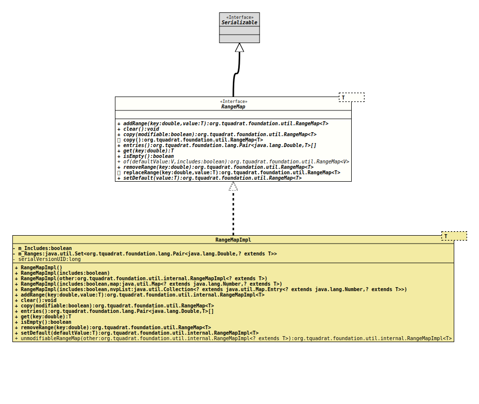

- Type Parameters:
T- The type of the mapped value.
- All Superinterfaces:
Serializable
- All Known Implementing Classes:
FinalRangeMap,RangeMapImpl
A range map is used to map a value to a given numerical range.
The lower border of the lowest range is always
-Double.MAX_VALUE.
- Author:
- Thomas Thrien (thomas.thrien@tquadrat.org)
- Version:
- $Id: RangeMap.java 1017 2022-02-10 19:39:09Z tquadrat $
- Since:
- 0.0.7
- See Also:
- UML Diagram
-

UML Diagram for "org.tquadrat.foundation.util.RangeMap"
{kind=link}
-
Method Summary
Modifier and TypeMethodDescriptionAdds a range.voidclear()Clears the range map.copy()Returns a modifiable copy of this range map.copy(boolean modifiable) Returns a copy of this range map.entries()Returns the entries in their order.get(double key) Returns the value for the range the given key is in.booleanisEmpty()Returnstrueif the range map is empty.static <V> RangeMap<V> of(V defaultValue, boolean includes) The factory method for a new instance ofRangeMap.removeRange(double key) Removes a range.replaceRange(double key, T value) Replaces an already existing range.setDefault(T value) Sets the default value and overwrites that one that was set on creation of the range map.
-
Method Details
-
addRange
Adds a range. If there is already a range with the given
key, it will not replaced by the new one!The method will return a reference to the map itself; this allows to chain it with other
#addRange(double, Object)method calls.- Parameters:
key- The upper border of the range.value- The mapped value.- Returns:
- A reference to this range map instance.
-
clear
void clear()Clears the range map. -
copy
Returns a copy of this range map.- Parameters:
modifiable-trueif the copy can be modified,falseotherwise.- Returns:
- The copy.
-
copy
Returns a modifiable copy of this range map.- Returns:
- The copy.
-
entries
Returns the entries in their order.- Returns:
- The entries; for an empty range map, an empty array will be returned.
-
get
Returns the value for the range the given key is in.- Parameters:
key- The key.- Returns:
- The value that is mapped to the range.
- Throws:
IllegalStateException- No entry was added to the range map; it is empty.
-
isEmpty
boolean isEmpty()Returns
trueif the range map is empty.Usually, a range map is empty only after a call to
clear()or when the last entry was removed by a call toremoveRange(double), but special implementations of this interface can handle this differently.- Returns:
trueif the range map is empty,falseif there were already some entries added to it.
-
of
The factory method for a new instance ofRangeMap.- Type Parameters:
V- The value type for the range map.- Parameters:
defaultValue- The default value; this is the that is returned if the key is above all range limits.includes-trueif the limit belongs to the range,falseotherwise.- Returns:
- The new range map instance.
-
removeRange
Removes a range. Nothing happens if there is no range for the given key value.
After this operation, the range map can be empty.
The method will return a reference to the map itself; this allows to chain it with
addRange(double, Object)method calls.- Parameters:
key- The key for the range to remove.- Returns:
- A reference to this range map instance.
-
replaceRange
Replaces an already existing range. If there is no range for the given key value, the method will just add a new range.
The method will return a reference to the map itself; this allows to chain it with
addRange(double, Object)method calls.- Parameters:
key- The upper border of the range.value- The mapped value.- Returns:
- A reference to this range map instance.
-
setDefault
Sets the default value and overwrites that one that was set on creation of the range map.
The default value is that one that is returned if the key is above all range limits.
The method will return a reference to the map itself; this allows to chain it with
addRange(double, Object)method calls.- Parameters:
value- The mapped value.- Returns:
- A reference to this range map instance.
- See Also:
-